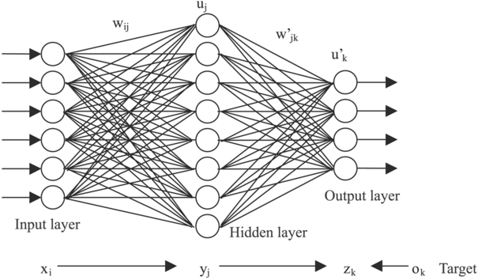

There are three primary types of Machine Learning methods:
All of these methods use an inter-changeable variety of algorithms for learning.
In Supervised Learning, the examples are already modeled, and the algorithm predicts future data based off previous data.
In Unsupervised Learning, the algorithm knows nothing about the data, it is completely unmodeled at the start of learning. It is the job of the machine to separate the data into similar groups.
This type of learning does not contain any outcome variables to predict.
In Semi-supervised Learning, the data is mixed (some labeled, some unlabeled). This type of learning is used to improve learning accuracy without the processor cost of Unsupervised Learning.
Artificial Neural Networks are learning systems that mimic the human neural networks. Using artificial neurons, machines can use labeled images to help identify like objects in other images.
Most common use: Supervised, Unsupervised and Reinforcement Learning
Classification algorithms include Logistic Regression and Support Vector Machines (SVM). They are used for things such as spam detection, text labeling, and diabetes diagnosis.
Most common use: Supervised Learning
Regression Algorithms include Linear Regression. The are used for things such as predicting prices of an item based on its size or weight.
Most common use: Supervised Learning
Clustering Algorithms include K-means and Latent Class Analysis (LCA) are used for things such as grouping customers into different market segmentation.
Most common use: Unsupervised Learning
Collaborative Filtering algorithms include Alternating Least Squares (ALS). These are behind most e-commerce recommender systems. These algorithms are used for product recommendations for providers like Netflix or Amazon.
These type of algorithms take information from like minded individuals. So say you tend to like the same movies as another individual, this algorithm will suggest movies from that other individual and vice versa.
Most common use: Unsupervised Learning
Dimensionality Reductionalgorithms include Principal Component Analysis (PCA). These are used for removing redundant variables in data.
Most common use: Unsupervised Learning